S&M HUB · USER GUIDE
BEFORTH
Prepared for Aureole — Sales & Marketing
User Guide
Pages, Buttons & How To Use Them
A visual walkthrough of every main page in S&M Hub. Each screenshot is marked with numbered red boxes that match the list underneath it.
Document Information
| Document title | User Guide — Pages, Buttons & How To Use Them |
| Prepared by | BeForth |
| Prepared for | Aureole — Sales & Marketing |
| Date | October 2026 |
| Applies to | S&M Hub v1.4.7 |
How to read this documentEach page of the app has a section with a screenshot. The red numbered boxes on the picture match the numbered list below it. Screenshots use demo data. The companion handbook, Rules & How It Works, explains why the system behaves as it does.
Contents
- 1Getting Around
- 2Leads
- 3Quotations
- 4Orders
- 5Database
- 6Domains, Targets & Planning
- 7Daily Work
- 8Events & Exhibitions
- 9Service
- 10Administration
- 11Settings & Support
- 12Quick Answers
1Getting Around
S&M Hub is a website, so there is nothing to install. Log in with your usual company username and password (the same ones as other internal systems). What you see depends on your role, so two people can open the same page and see different buttons or records. That is expected.
1.1Dashboard
📍 Sidebar → Dashboard
The first page after login. Numbers are demo data.
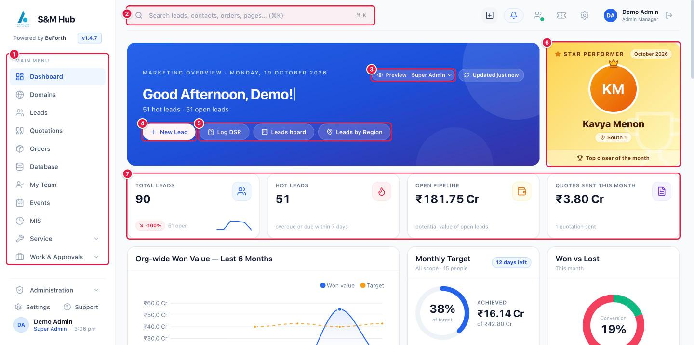
- Main menu. Every page you may open. A shorter list means fewer permissions, not a fault.
- Quick search. Click it or press ⌘K / Ctrl+K.
- Role preview. Shows which role’s dashboard you are looking at.
- New Lead. Starts a new lead straight from the dashboard.
- Shortcuts. Log DSR, the Leads board and Leads by Region.
- Star Performer of the Month. The month’s top closer by value of leads won. The amount is never shown.
- Key numbers. Total leads, hot leads (overdue or due within 7 days), open pipeline value and quotes sent this month.
TipEverything on the Dashboard is filtered to your scope: an Employee sees their own numbers, a Region Head the team’s, and Domain Heads and Super Admins more.
1.2Quick search
📍 Top bar, or press ⌘K / Ctrl+K
Type a page name to jump straight to it. It finds pages, not records. To find a lead, use the search box on the Leads page.
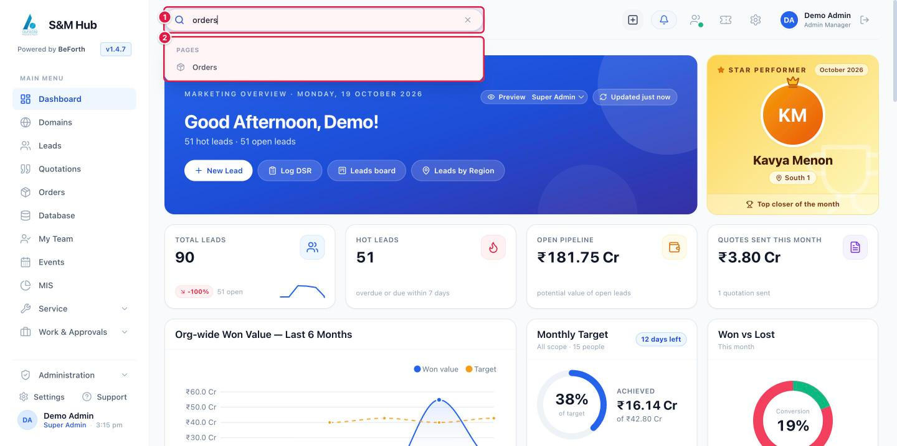
- Search box. Type part of a page name, for example “orders”.
- Results. Matching pages appear under “Pages”. Click one to open it.
2Leads
A lead is a sales opportunity. The Leads page is a board: each column is a pipeline stage and each card is a lead. Cards move right as the deal progresses.
2.1Leads board
📍 Sidebar → Leads
Leads Management (demo data).
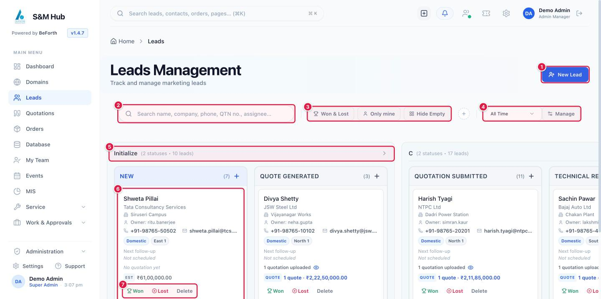
- New Lead. Opens the Create Lead form.
- Search. By name, company, phone, quotation number or assignee.
- Quick filters. Won & Lost shows closed leads, which are hidden by default. Only mine shows your leads. Hide Empty hides stages with no leads.
- Time range and Manage. Limit by date. Manage (managers and admins) sets up pipeline stages.
- Stage group. Stages are grouped (here, “Initialize”). The header shows how many stages and leads it holds.
- A lead card. Contact, company and plant, owner, phone and email, next follow-up and quotation value. Click it to open the lead.
- Won / Lost / Delete. Closes the lead. Won asks for the details described in section 2.5.
2.2Create Lead form
📍 Leads → New Lead
The form has sections, starting with the main contact.
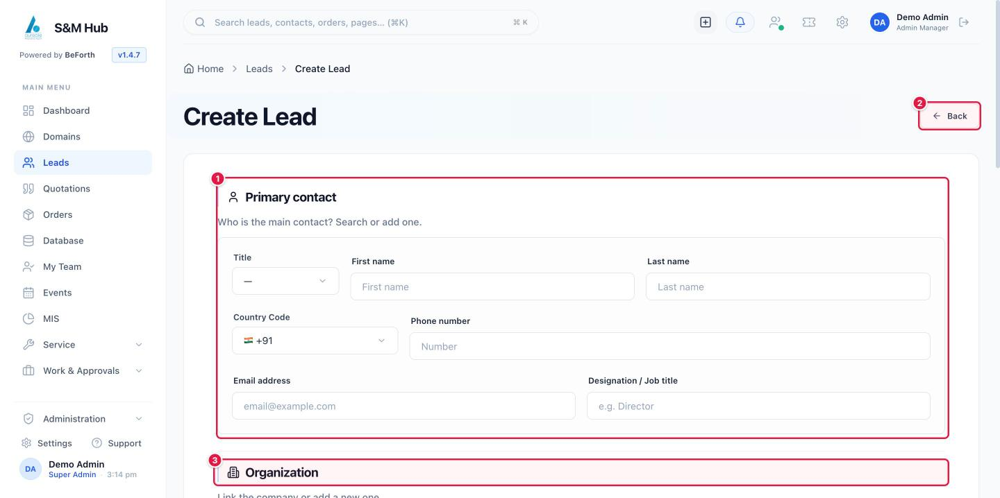
- Primary contact. Search for an existing contact or add a new one. Later sections cover the organization and the enquiry.
- Back. Return to the board without saving.
- Organization. Link the company or add a new one.
2.3Lead details
📍 Leads → click a lead card
Everything about one lead in one place.
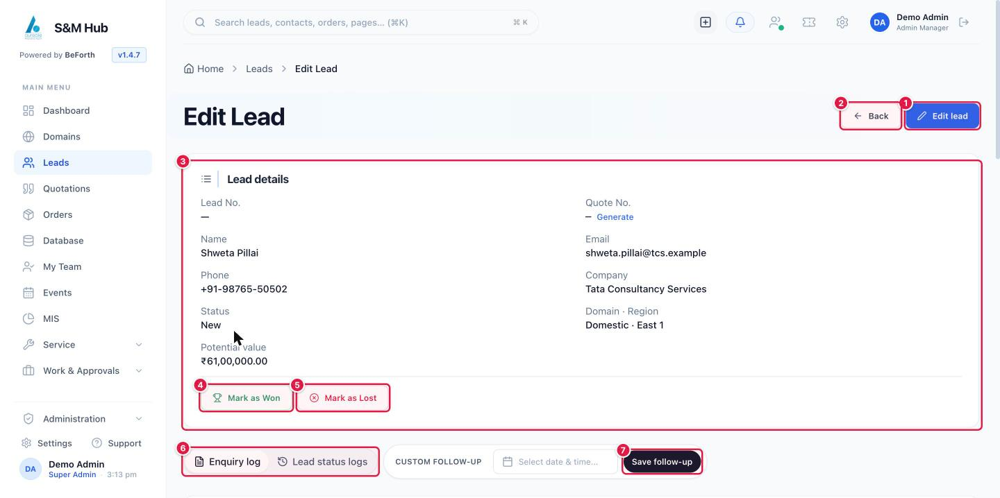
- Edit lead. Switch the details into an editable form.
- Back. Return to the board.
- Lead details. Lead number, quote number (with a Generate link), name, email, phone, company, status, domain · region and potential value.
- Mark as Won. Opens the Won pop-up (section 2.5).
- Mark as Lost. Closes the lead as lost.
- Enquiry log and Lead status logs. Switch between the activity history and the record of stage changes.
- Save follow-up. Pick a date and time for the next follow-up and save it.
2.4Logging activity and quotations
📍 Lead details → scroll down to the Enquiry log
Record calls, meetings and notes, and attach quotations.
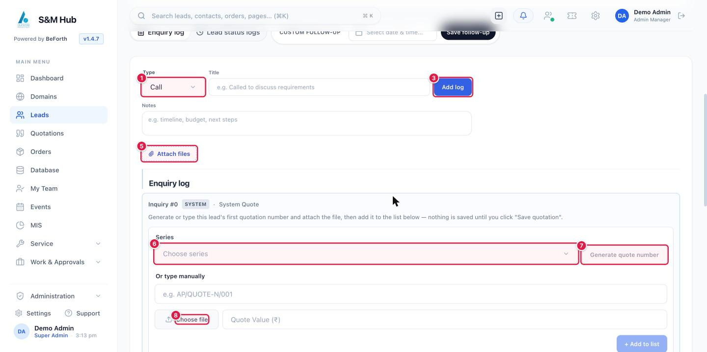
- Type. The kind of activity, for example Call.
- Add log. Saves the entry. Also fill in the title and notes above it.
- Attach files. Add documents to the entry.
- Series. Choose a numbering series for the quotation number, or type a number manually.
- Generate quote number. Creates the next number in the chosen series.
- Choose file. Upload the quotation file, add its value, then Add to list. Nothing is saved until you click Save quotation.
2.5Marking a lead Won
📍 Lead details → Mark as Won (or the Won button on a card)
This pop-up appears when you mark a lead as won. The details appear in the lead’s enquiry log.
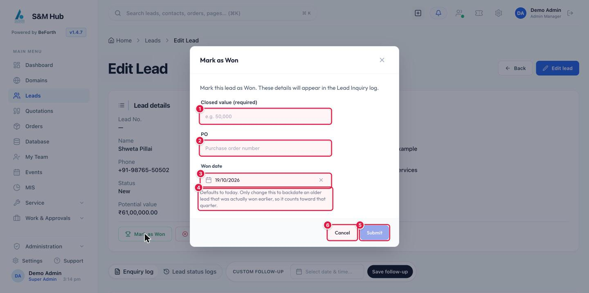
- Closed value (required). The final sale value.
- PO. The customer’s purchase order number.
- Won date. Defaults to today.
- Back-dating. Only change the date to back-date an older lead that was actually won earlier, so it counts toward the right quarter.
- Submit. Saves the win. It is greyed out until the required value is entered.
- Cancel. Closes the pop-up without saving.
Where a win countsA win counts in the month of its Won date, on the Dashboard, in MIS and for the Star Performer.
3Quotations
3.1Quotations list
📍 Sidebar → Quotations
Every quotation uploaded in enquiry logs, with the lead and enquiry it belongs to.
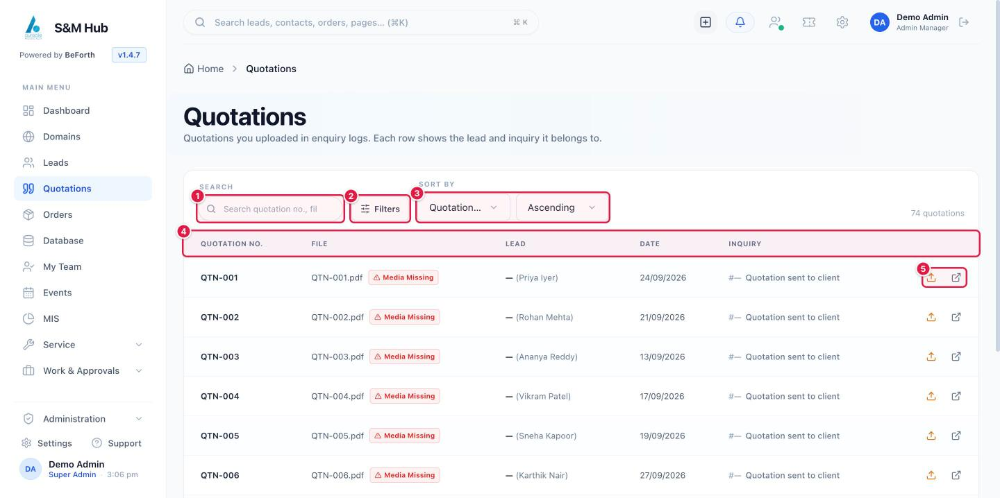
- Search by quotation number or file name.
- Filters. Narrow the list.
- Sort. Choose the column and direction.
- Columns. Quotation number, file, lead, date and the enquiry it belongs to.
- Upload and open. Add a file to a quotation or open it. A red Media Missing tag means the record exists but the file cannot be found.
Counting ruleA quotation counts once, at its latest revised price, in the period it was first sent.
4Orders
Orders are created from won leads. The board shows each order’s stage. Moving a card changes its status and writes it to the order’s history.
4.1Orders board
📍 Sidebar → Orders
Kanban view (demo data).
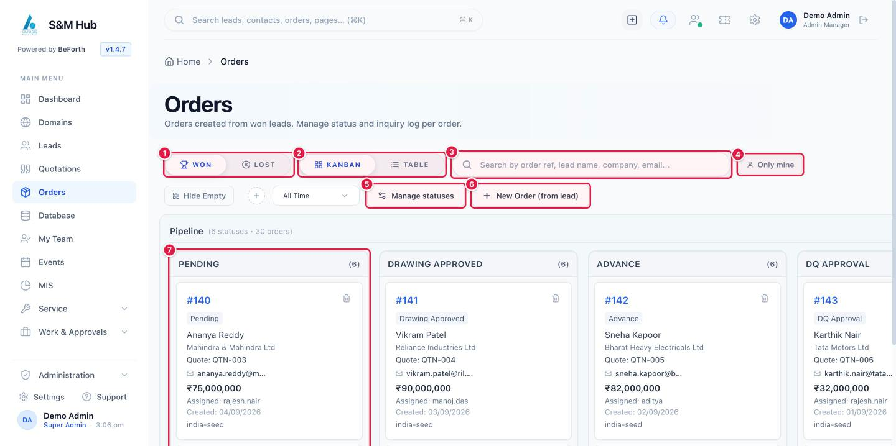
- Won / Lost. Switch between won orders and lost ones.
- Kanban / Table. Board view or list view.
- Search by order reference, lead name, company or email.
- Only mine. Show only your orders.
- Manage statuses. (Managers and admins) Add, reorder or retire order stages.
- New Order (from lead). Convert a won lead into an order.
- A stage column. Pending, Drawing Approved, Advance and so on, with the count. Each card shows the quote number, customer and value.
Rules worth knowingEvery status move is logged (from, to, who, when). A title and description are optional. Moving to Lost needs a description of at least 100 characters.
4.2Orders table view
📍 Orders → Table
The same orders as a list.
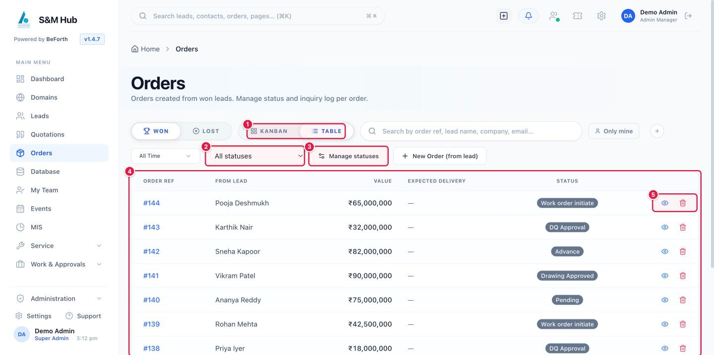
- Kanban / Table. Switch the view.
- Status filter. Show one stage only.
- Manage statuses. Set up order stages.
- The table. Order reference, lead, value, expected delivery and status.
- View and delete. The eye icon opens the order; the bin deletes it.
4.3New Order
📍 Orders → New Order (from lead)
Create an order from a won lead.
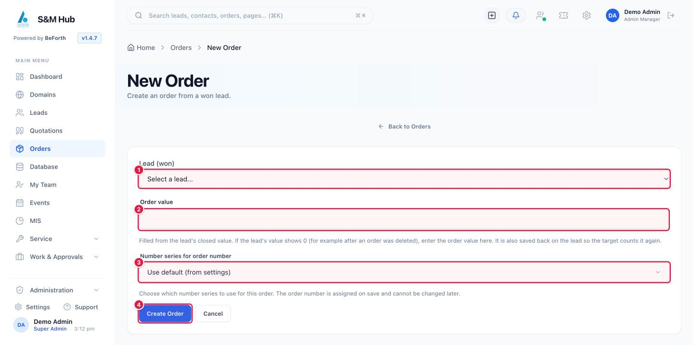
- Lead (won). Choose the won lead.
- Order value. Filled from the lead’s closed value. If the lead’s value shows 0 (for example after an order was deleted), enter it here. It is also saved back on the lead so the target counts it again.
- Number series. Pick the series for the order number, or use the default from settings. The number is assigned on save and cannot be changed later.
- Create Order. Saves the order.
4.4Order detail
📍 Orders → click an order number
One order with its inquiry log.
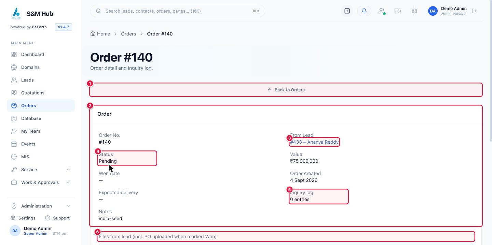
- Back to Orders.
- Order. Order number, status, won date, expected delivery, notes, value, created date and number of inquiry-log entries.
- From Lead. Opens the lead the order came from.
- Status. The current stage.
- Inquiry log. The number of entries recorded for this order.
- Files from lead. Includes the PO uploaded when the lead was marked Won.
Changing an order’s valueNeeds a reason of at least 100 characters. The lead’s closed value follows the new order value.
5Database
The company directory: organizations and their plants, customers, contacts and visiting cards.
5.1Organizations
📍 Sidebar → Database
The first tab.
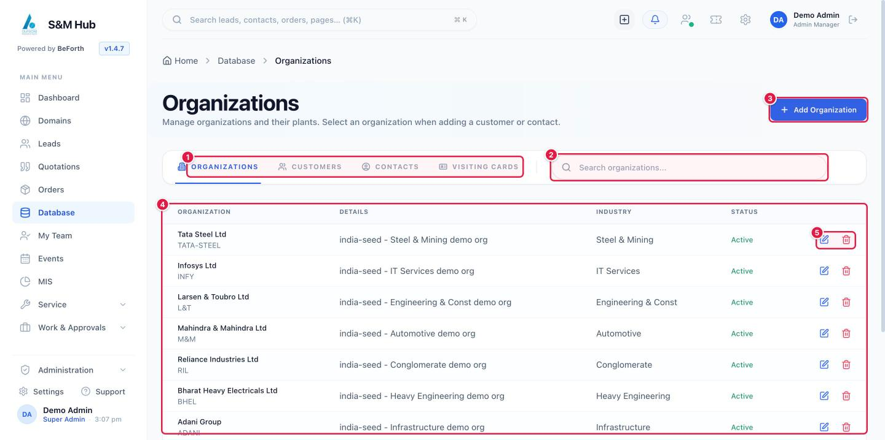
- Tabs. Organizations, Customers, Contacts and Visiting Cards.
- Search within the current tab.
- Add Organization. The button changes with the tab.
- The list. Name, details, industry and status.
- Edit and delete.
5.2Customers
📍 Database → Customers
The Customer Registry.
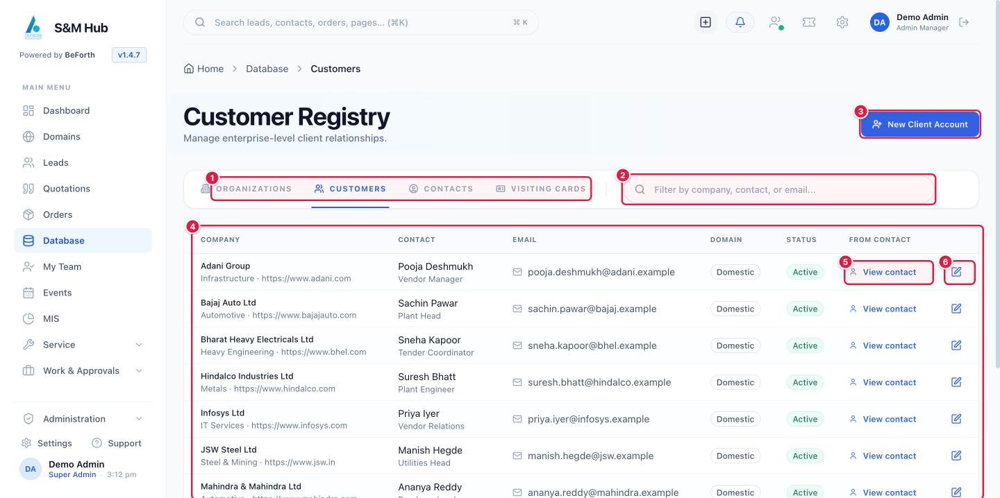
- Tabs.
- Filter by company, contact or email.
- New Client Account. Create a customer.
- The list. Company, contact, email, domain, status and where the customer came from.
- View contact. Opens the contact this customer was promoted from.
- Edit.
Promoting a contactA contact promoted to a customer can no longer be deleted.
5.3Contacts
📍 Database → Contacts
Individual people. Link them to organizations and plants, and convert them to leads.
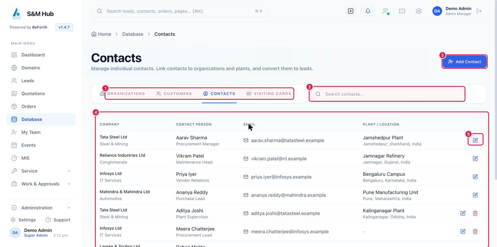
- Tabs.
- Search contacts.
- Add Contact.
- The list. Company, contact person, email and plant or location.
- Edit.
5.4Visiting cards
📍 Database → Visiting Cards
Contacts captured from business cards, either from the external card scanner or added by hand. Convert a card to a full Contact when you want to work it.
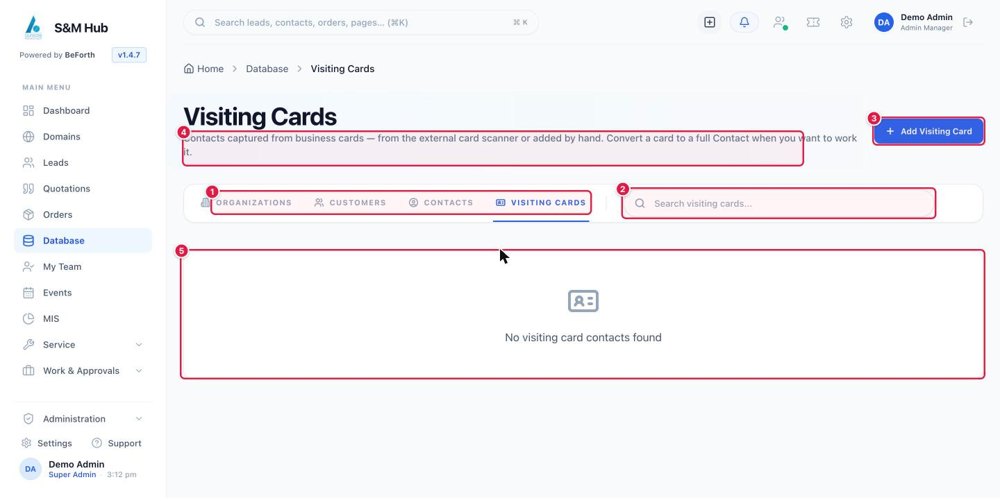
- Tabs.
- Search visiting cards.
- Add Visiting Card. Add one by hand.
- What this tab is for.
- The list. Empty in the demo data.
5.5Add an organization
📍 Database → Organizations → Add Organization
Two tabs: the organization itself, and its plants.
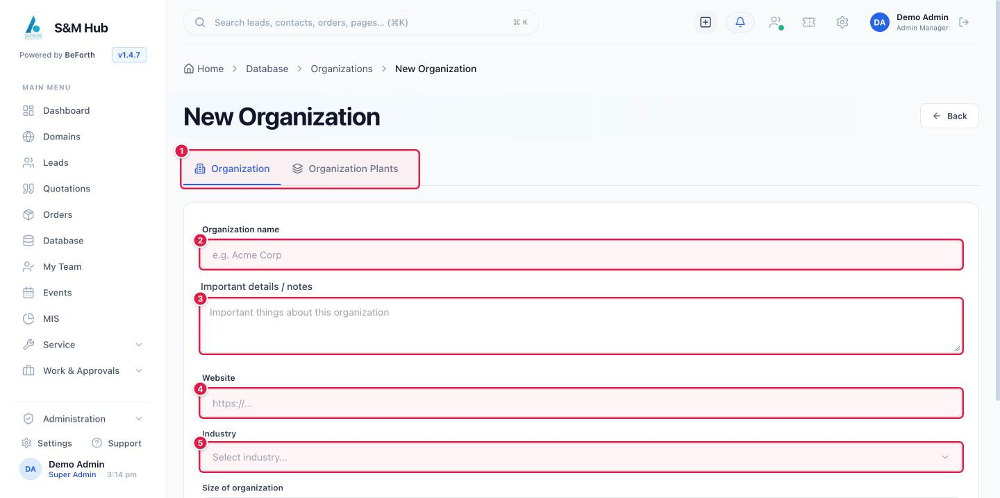
- Organization / Organization Plants. Plants are the locations of the organization.
- Organization name.
- Important details / notes.
- Website.
- Industry. Further fields below cover size and description.
5.6Create a customer
📍 Database → Customers → New Client Account
Link an existing organization or create one on the same screen.
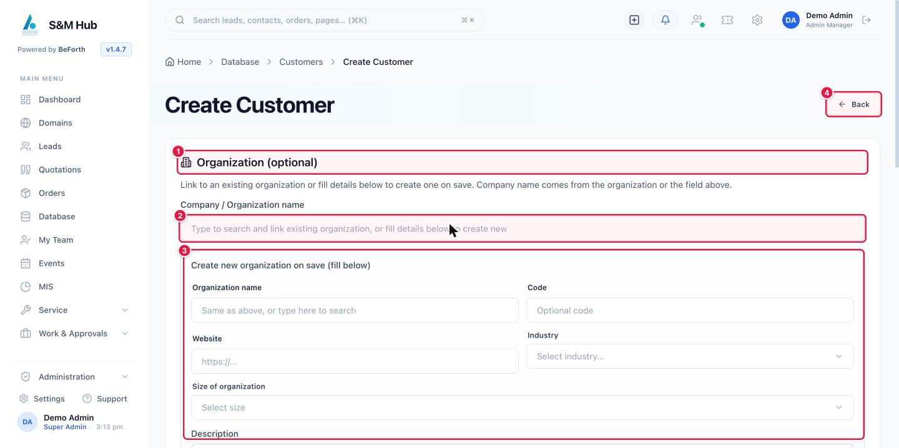
- Organization (optional).
- Company / Organization name. Type to search and link an existing organization, or fill the details below to create a new one.
- Create new organization on save. Name, code, website, industry, size and description.
- Back.
5.7Create a contact
📍 Database → Contacts → Add Contact
First name, last name and phone are required.
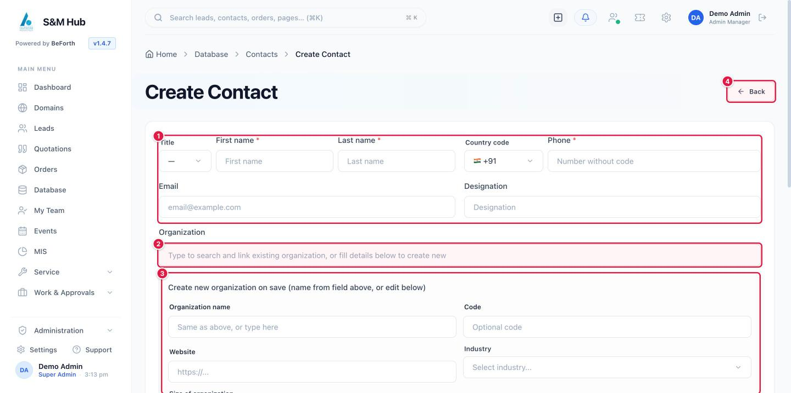
- Contact details. Title, names, country code, phone, email and designation.
- Organization. Search and link an existing organization.
- Create new organization on save. Fill this to add the organization at the same time.
- Back.
6Domains, Targets & Planning
Where the team’s targets, plans and results are managed.
6.1Domains
📍 Sidebar → Domains
The marketing hierarchy and its targets.
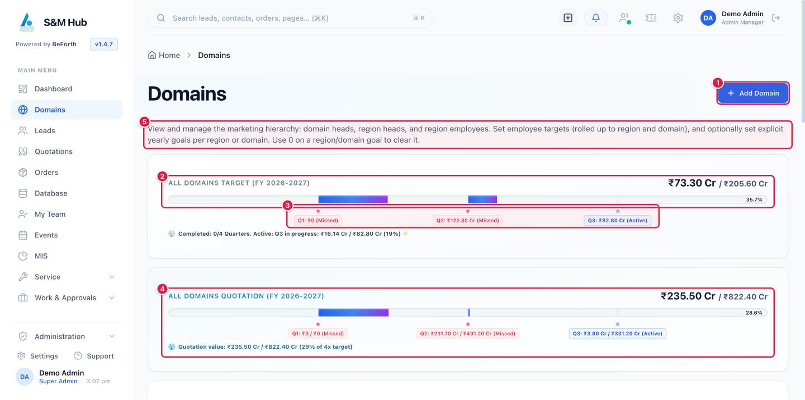
- Add Domain. (Admins) Create a domain, then add regions under it.
- Target bar. Won value against the financial-year target, with the percentage achieved.
- Quarter markers. Each quarter is marked Missed or Active against its target.
- Quotation bar. Quotation value against four times the target.
- Intro text. Targets roll up from employee to region to domain. Entering 0 on a region or domain goal clears it.
6.2Create a domain
📍 Domains → Add Domain
Name and code are required.
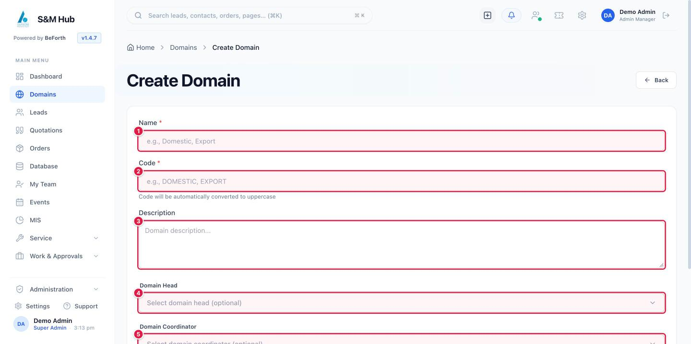
- Name. For example Domestic or Export.
- Code. Converted to uppercase automatically.
- Description.
- Domain Head (optional).
- Domain Coordinator (optional).
6.3My Team
📍 Sidebar → My Team
A team member’s performance for any period.
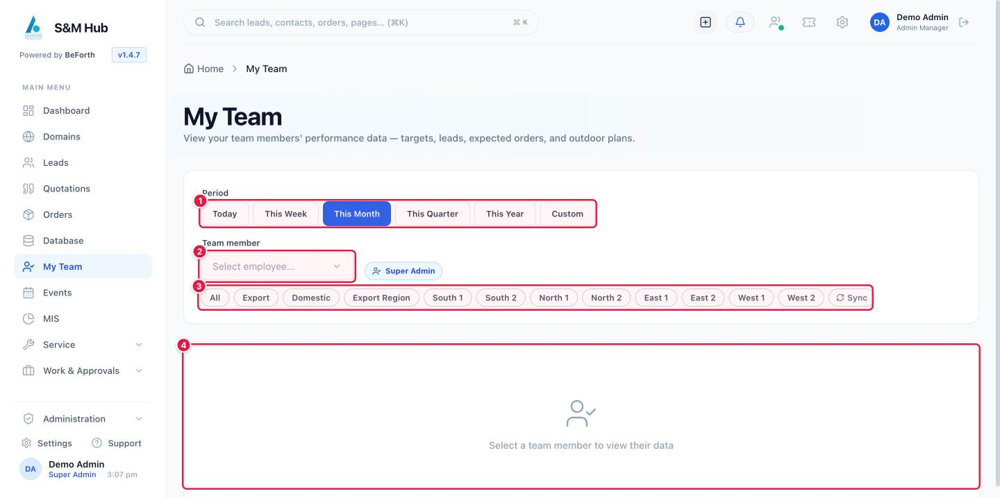
- Period. Today, This Week, This Month, This Quarter, This Year or Custom.
- Team member. Pick the person to view.
- Region and domain chips. Narrow the list of people.
- Results. The person’s targets, leads, expected orders and outdoor plans.
6.4MIS (month-end review)
📍 Sidebar → MIS
How the plan went, what was won and who has filed the next plan.
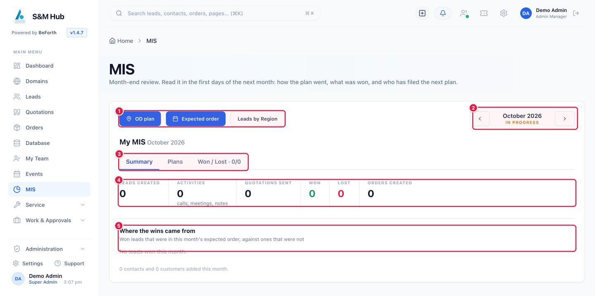
- Plan buttons. OD plan, Expected order and Leads by Region.
- Month switcher. Move between months.
- Tabs. Summary, Plans and Won / Lost.
- Numbers. Leads created, activities, quotations sent, won, lost and orders created.
- Where the wins came from. Won leads that were in the month’s expected order, against ones that were not.
Leads createdA lead counts in the month of its earliest real enquiry date when that is earlier than the day it was saved.
6.5Outdoor (OD) plan
📍 MIS → OD plan
Plan your visits and travel for the coming month.
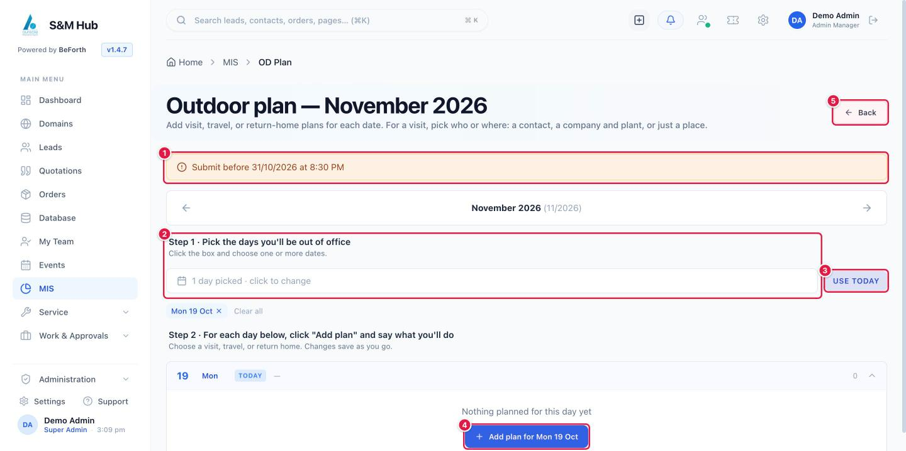
- Deadline. The plan must be submitted before the time shown.
- Step 1. Pick the days you will be out of office.
- Use today. Picks today’s date.
- Add plan. Step 2: for each day, add a visit, travel or return-home plan. Changes save as you go.
- Back.
6.6Expected order (next month)
📍 MIS → Expected order
Pick the leads you expect to close next month. Only hot leads are shown, and a lead you already added is greyed out.
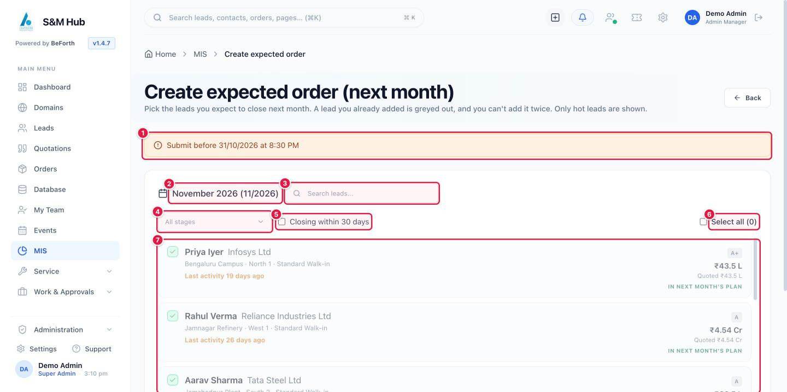
- Deadline.
- Month.
- Search leads.
- Stage filter.
- Closing within 30 days. Show only leads expected to close soon.
- Select all.
- The lead list. Each row shows the lead, company, plant, last activity and value. “In next month’s plan” marks leads already added.
6.7Leads by Region
📍 MIS → Leads by Region
Every lead created, quoted or won in the period, grouped by region.
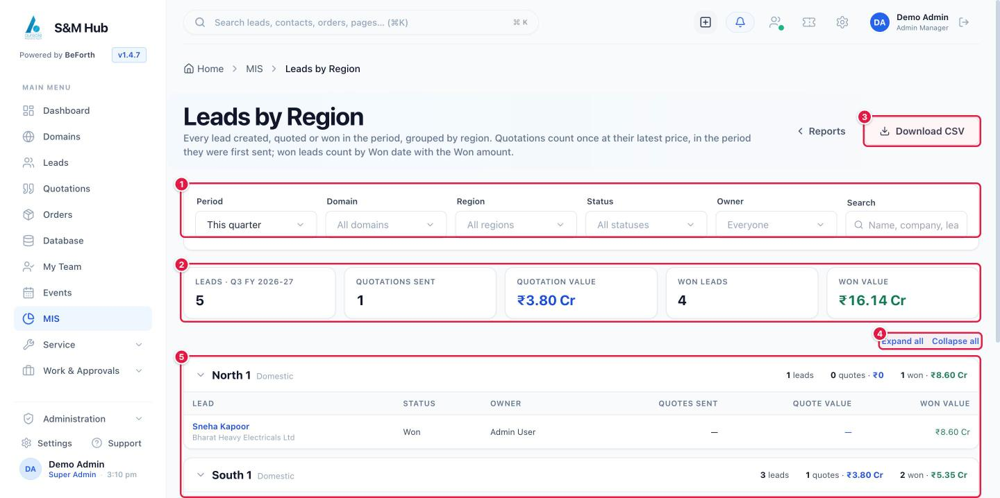
- Filters. Period, domain, region, status, owner and search.
- Summary cards. Leads, quotations sent, quotation value, won leads and won value.
- Download CSV.
- Expand all / Collapse all.
- Region groups. Each region lists its leads with status, owner, quotes and won value.
How it countsQuotations count once at their latest price, in the period they were first sent. Won leads count by Won date with the won amount.
7Daily Work
Daily status reports, tasks and approvals.
7.1Daily Status Reports
📍 Sidebar → Work & Approvals → Log DSR
View DSR tasks, recent leads and orders.
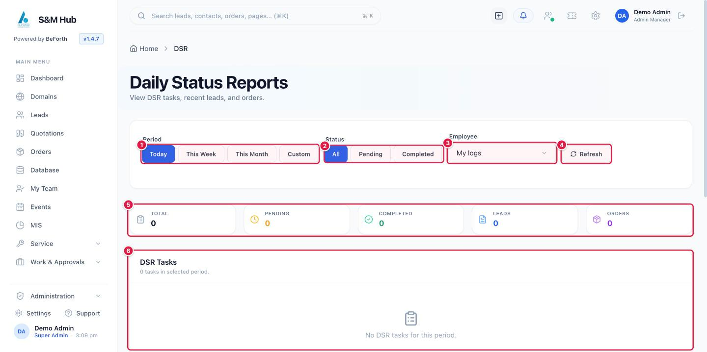
- Period. Today, This Week, This Month or Custom.
- Status. All, Pending or Completed.
- Employee. Defaults to your own logs.
- Refresh.
- Counts. Total, pending, completed, leads and orders.
- DSR tasks. The list for the selected period.
7.2My To-Do
📍 Sidebar → Work & Approvals → My To-Do
Tasks assigned to you. Mark one done and HRMS logs it as your DSR.
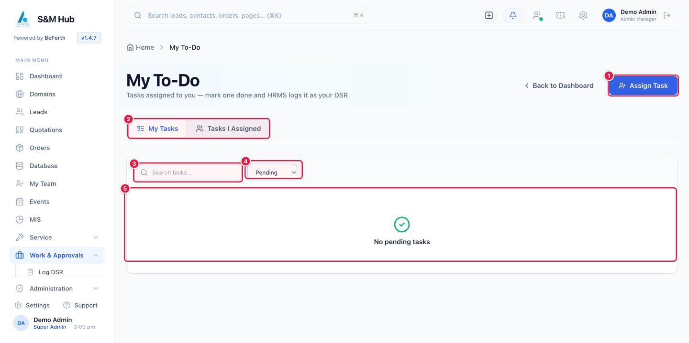
- Assign Task. Give a task to someone else.
- My Tasks / Tasks I Assigned.
- Search tasks.
- Status filter. Pending by default.
- The list.
7.3Daily Service Report history
📍 Sidebar → Work & Approvals → Daily Service Reports
Review submitted reports, calling records and approval status.
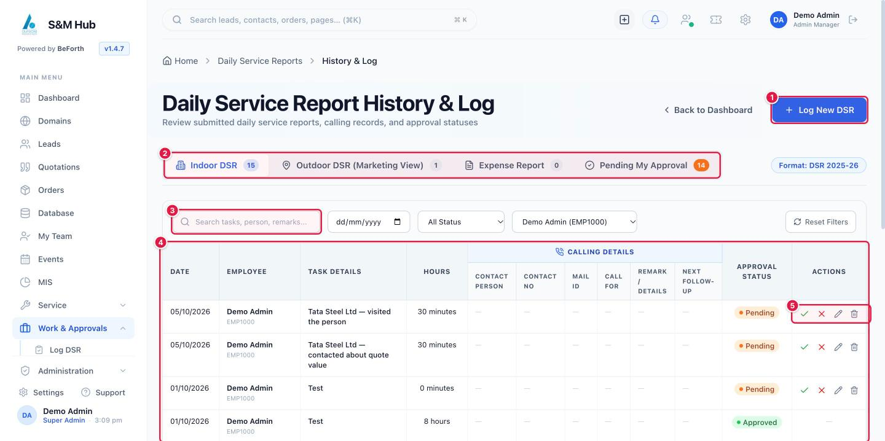
- Log New DSR. Start a new report.
- Tabs. Indoor DSR, Outdoor DSR (Marketing view), Expense Report and Pending My Approval, each with a count.
- Search tasks, people or remarks. Date, status and employee filters sit beside it.
- The table. Date, employee, task details, hours, calling details, approval status and actions.
- Row actions. Tick, cross, pencil and bin icons: approve, reject, edit and delete.
8Events & Exhibitions
8.1Events
📍 Sidebar → Events
Exhibitions and roadshows. The demo data has none yet.
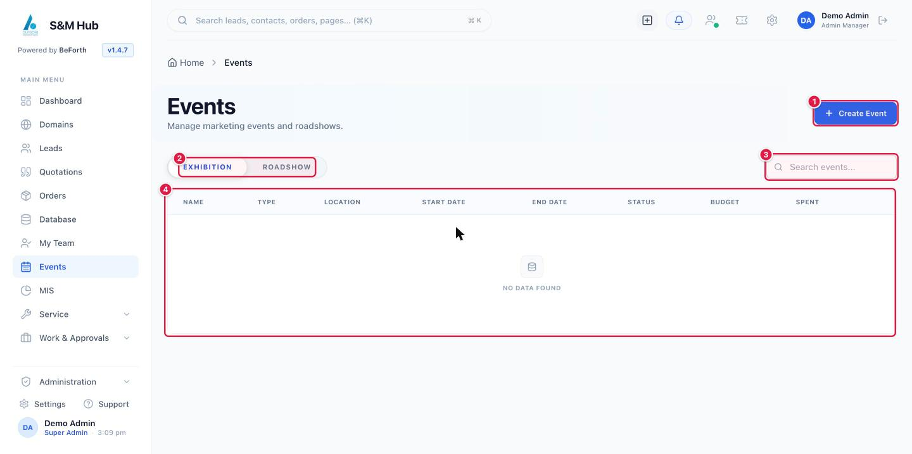
- Create Event.
- Exhibition / Roadshow.
- Search events.
- The list. Name, type, location, dates, status, budget and spend.
8.2Create an event
📍 Events → Create Event
Fields marked * are required.
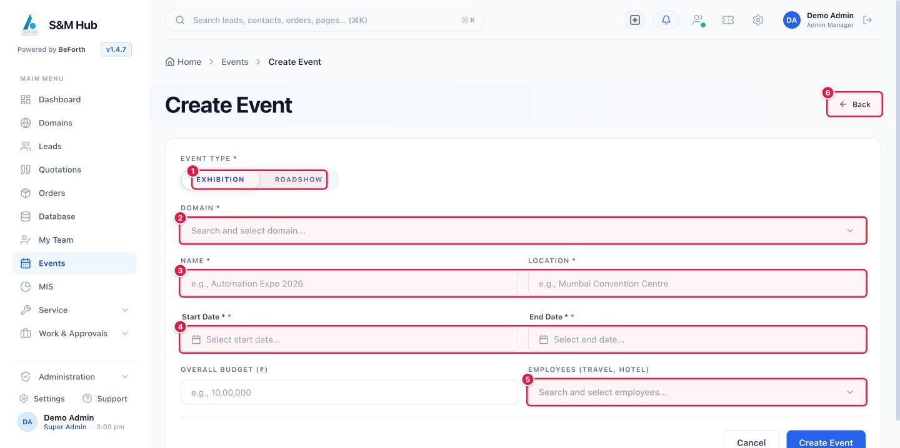
- Event type. Exhibition or Roadshow.
- Domain.
- Name and location.
- Start and end date.
- Employees (travel, hotel). Anyone added here can see the event.
- Back.
Who sees an eventEmployees see only events they are on or created. Heads and coordinators see their domain’s events.
9Service
Everything after the sale: maintenance contracts, visits, work orders, store dispatch, complaints and reports.
9.1Service contracts
📍 Sidebar → Service → Contracts
AMC / CMC maintenance contracts for customer plants.
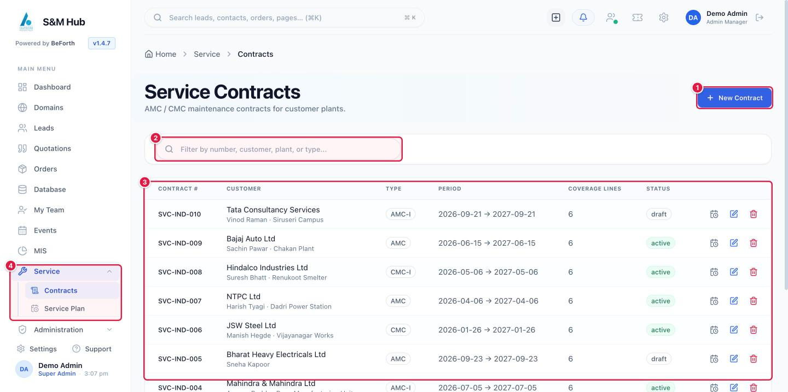
- New Contract.
- Filter by number, customer, plant or type.
- Contracts. Contract number, customer and plant, type, period, coverage lines and status (draft or active).
- Service menu. Contracts and Service Plan.
9.2New contract
📍 Service → Contracts → New Contract
Start with the customer.
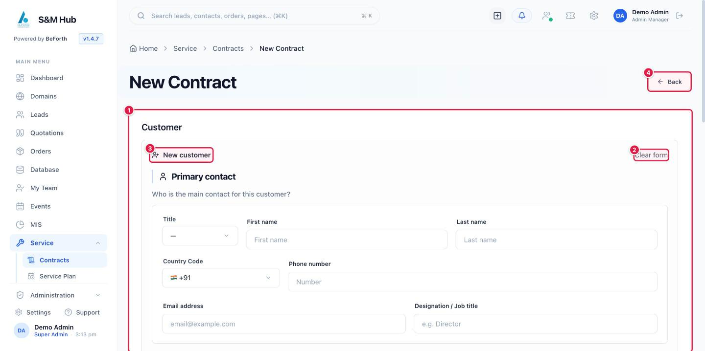
- Customer. Choose an existing customer or enter a new one with a primary contact.
- Clear form.
- New customer.
- Back.
9.3Service visits (Service Plan)
📍 Sidebar → Service → Service Plan
All planned, scheduled and completed visits across contracts.
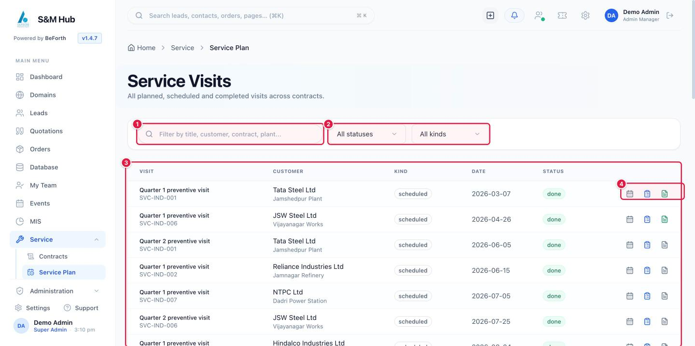
- Filter by title, customer, contract or plant.
- Status and kind filters.
- Visits. Visit, customer, kind, date and status.
- Row shortcuts. Three icons per visit that open its related screens.
RemindersVisit reminders go out 15, 7, 3 and 1 day(s) before. The customer’s preferred date takes priority.
9.4Work orders
📍 Service → Work Orders
Each work order is Prepared → Checked → Approved.
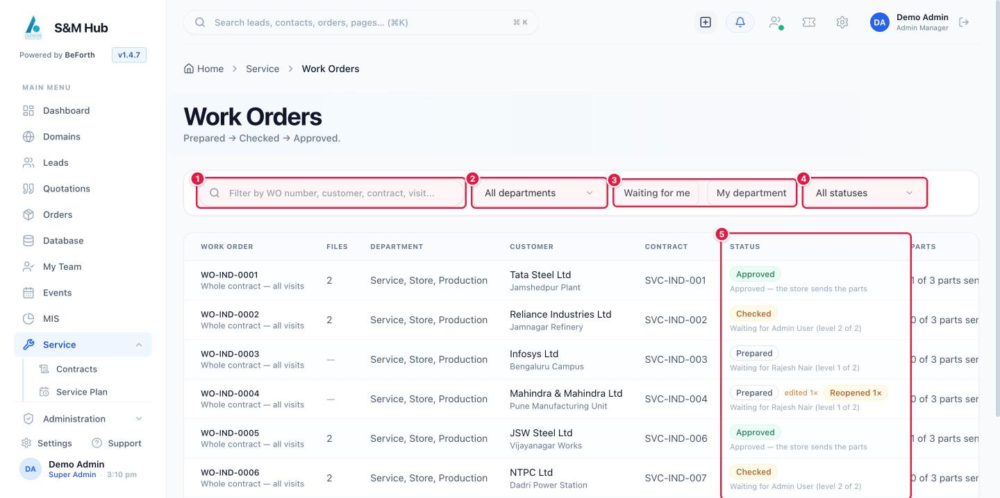
- Filter by work-order number, customer, contract or visit.
- Department filter.
- Waiting for me / My department. Quick views of what needs your action.
- Status filter.
- Status column. Shows the stage and who it is waiting for, for example “Waiting for Admin User (level 2 of 2)”.
9.5Store / dispatch
📍 Service → Store
Approved work orders that still need material, earliest needed-by first. You are reminded 30, 15 and 7 days before each visit.
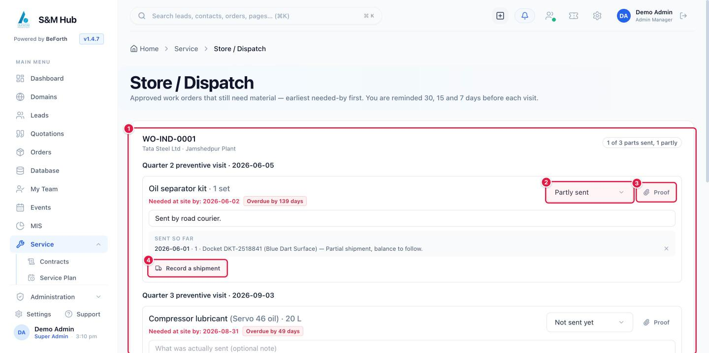
- A work order. With its visits and parts, and a count of parts sent.
- Dispatch status. For example Not sent yet or Partly sent.
- Proof. Attach proof of dispatch.
- Record a shipment. Log what was sent and how.
9.6Complaints
📍 Service → Complaints
Customer machine complaints, every ticket with full history.
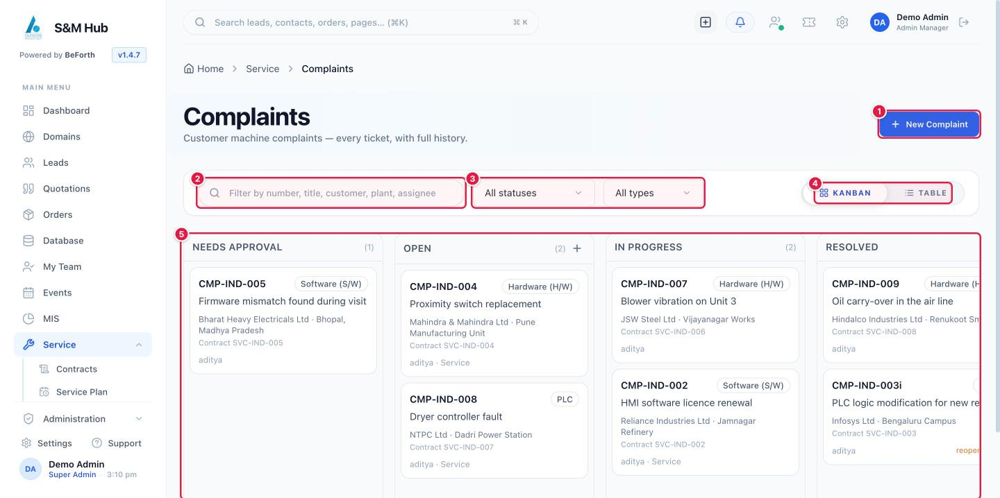
- New Complaint.
- Filter by number, title, customer, plant or assignee.
- Status and type filters.
- Kanban / Table.
- Columns. Needs Approval, Open, In Progress, Resolved and so on.
9.7New complaint
📍 Service → Complaints → New Complaint
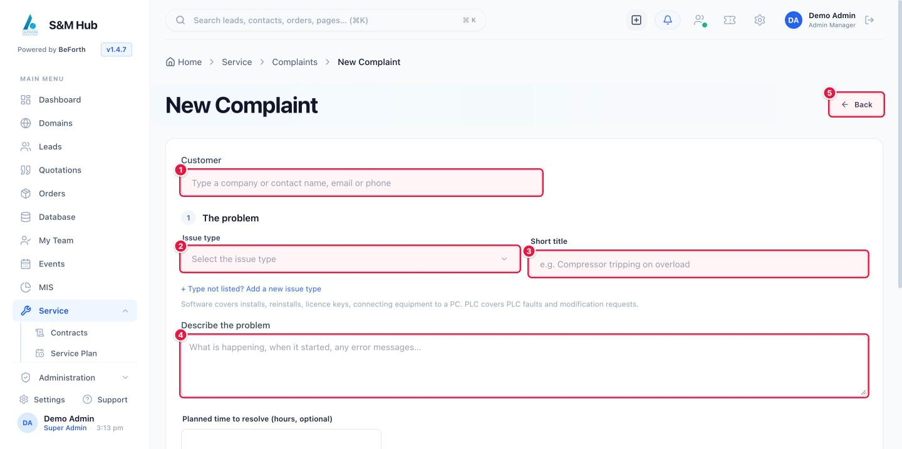
- Customer. Type a company or contact name, email or phone.
- Issue type. Hardware, Software, PLC and so on. If your type is not listed, add a new issue type from the link below it.
- Short title.
- Describe the problem. What is happening, when it started, any error messages.
- Back.
9.8Service reports
📍 Service → Reports
Contracts, visits, work orders and complaints for each customer.
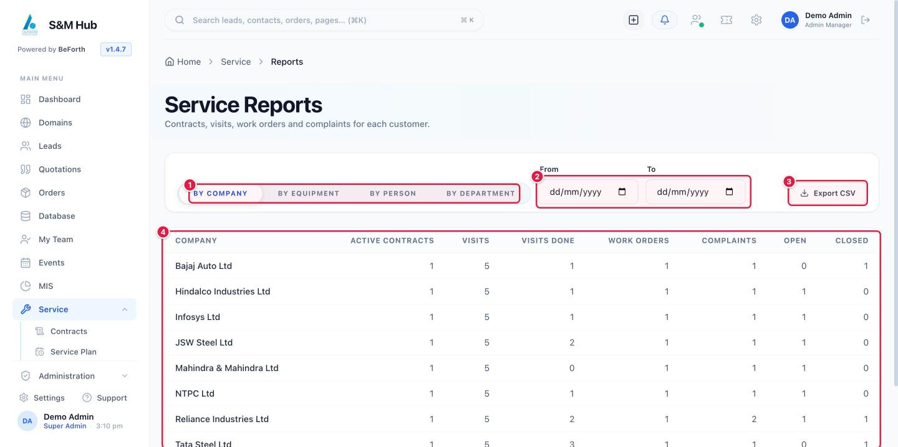
- Views. By company, equipment, person or department.
- From / To dates.
- Export CSV.
- The table. Active contracts, visits, visits done, work orders, complaints, open and closed.
10Administration
These pages are for admins and managers. You see them only if your role allows it.
10.1Numbering series
📍 Administration → Numbering Series
Rules for generating reference numbers (quotations, work orders and so on).
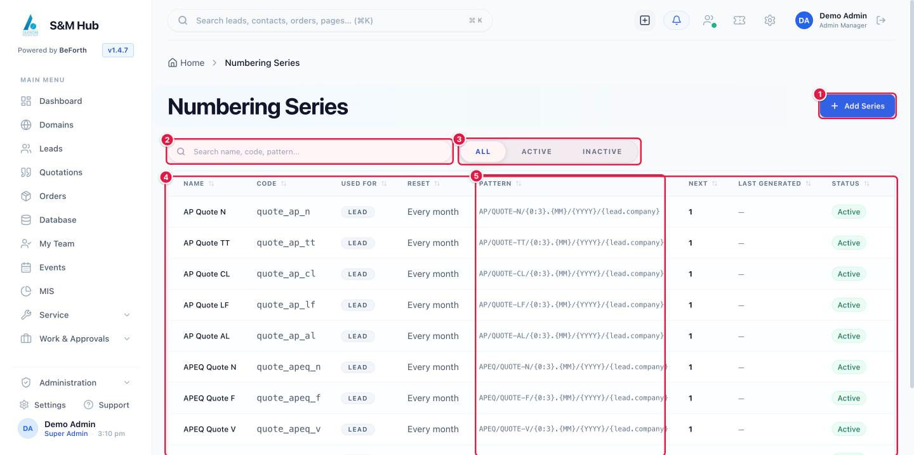
- Add Series.
- Search by name, code or pattern.
- All / Active / Inactive.
- The list. Name, code, used for, reset rule, pattern, next number, last generated and status.
- Pattern. Placeholders such as month, year and a counter build each number. Financial Year gives the April–March year.
Reset ruleA series can restart every day, week, month, year or every financial year (Apr–Mar).
10.2Marketing roles
📍 Administration → Roles
Role definitions from HRMS, scoped to Marketing. They are read-only here.
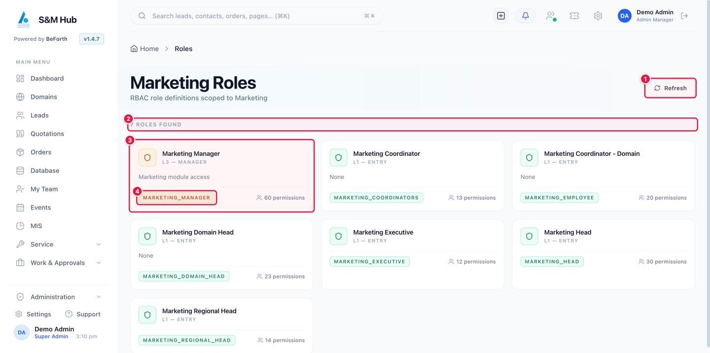
- Refresh. Reload the roles.
- Count. How many roles exist.
- A role. Name, level and description.
- Role code and permissions. The role’s code and how many permissions it carries.
10.3Employees
📍 Administration → Employees
Marketing team members and the domains or regions they are assigned to. Assign new users to give them access.
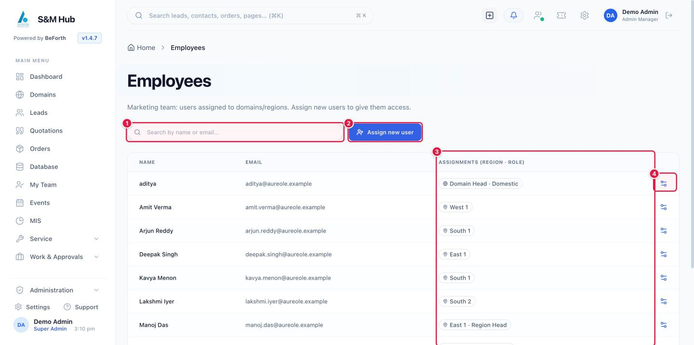
- Search by name or email.
- Assign new user.
- Assignments. Region and role (for example “East 1 · Region Head”).
- Manage. Change this person’s assignments.
10.4Live activity
📍 Administration → Live Activity
Who is online right now and which screen they are on.
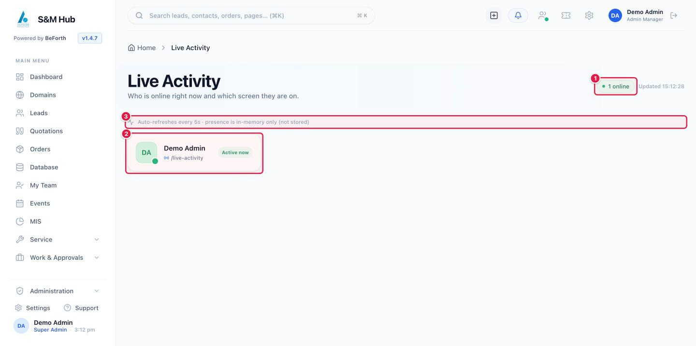
- Online count.
- A person. Their name, current screen and “Active now”.
- Note. Refreshes every 5 seconds. Presence is held in memory only and is not stored.
11Settings & Support
11.1Profile
📍 Sidebar → Settings
Your profile and integrations.
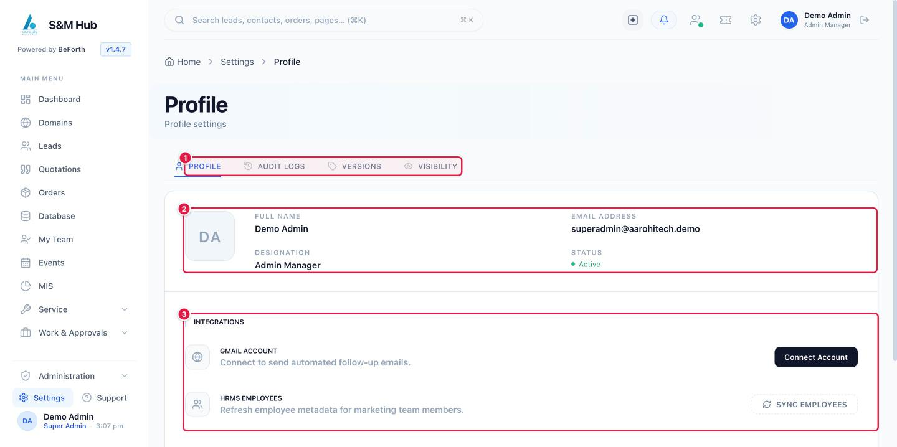
- Tabs. Profile, Audit Logs, Versions and Visibility.
- Your details. Name, designation, email and status, from HRMS.
- Integrations. Connect a Gmail account for automated follow-up emails, and sync employees from HRMS.
11.2Audit logs
📍 Settings → Audit Logs
A record of who did what.
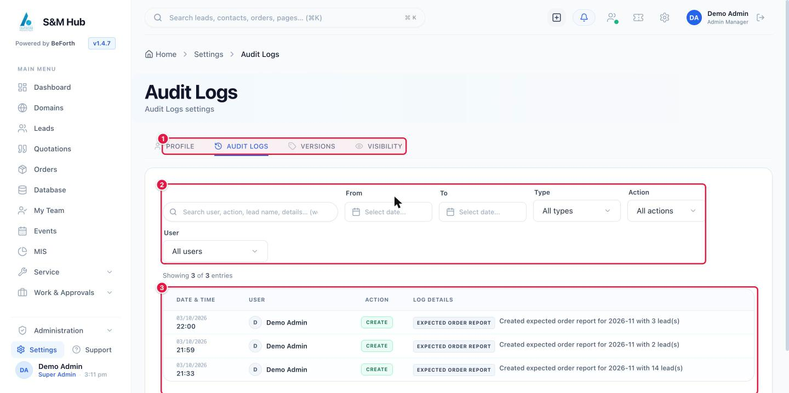
- Tabs.
- Filters. Search, from and to dates, type, action and user.
- The log. Date and time, user, action and details.
11.3Versions
📍 Settings → Versions
In-app release notes (“What’s New”).
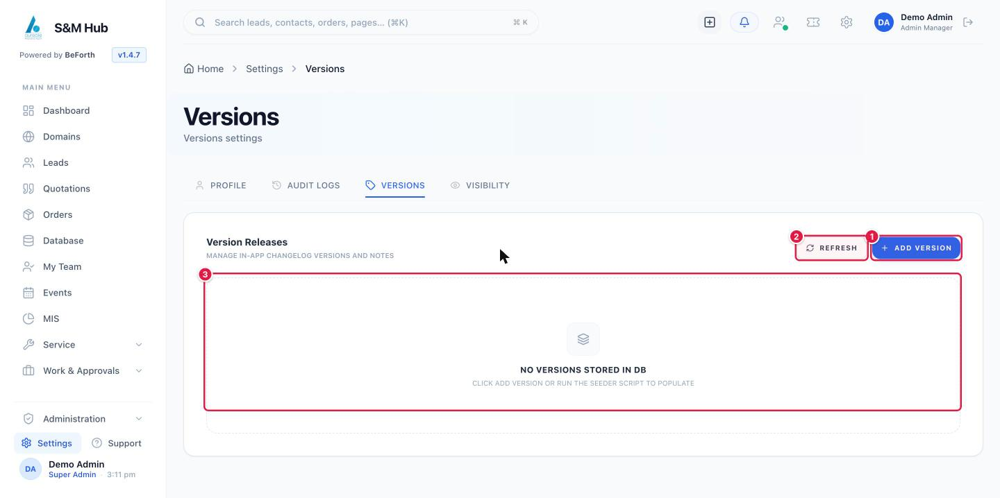
- Add Version. (Admins)
- Refresh.
- Version releases. Empty in the demo data.
11.4Visibility
📍 Settings → Visibility
Controls who can see actual achieved numbers for past quarters.
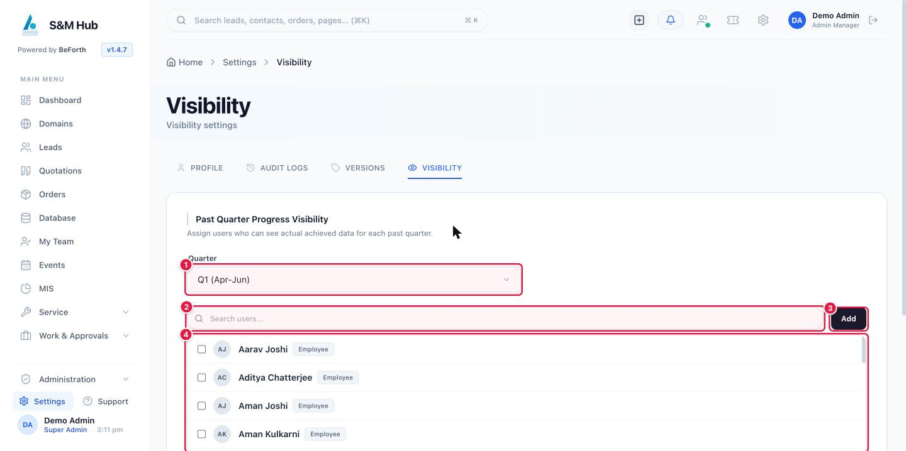
- Quarter. Choose the quarter.
- Search users.
- Add. Adds the ticked users to the quarter’s list.
- User list. Tick the people who may see that quarter’s numbers.
What this is notVisibility Settings only hide or show past-quarter numbers on the Domains page. They do not grant or block any action.
11.5Support & Tickets
📍 Sidebar → Support
Report a bug or ask for help.
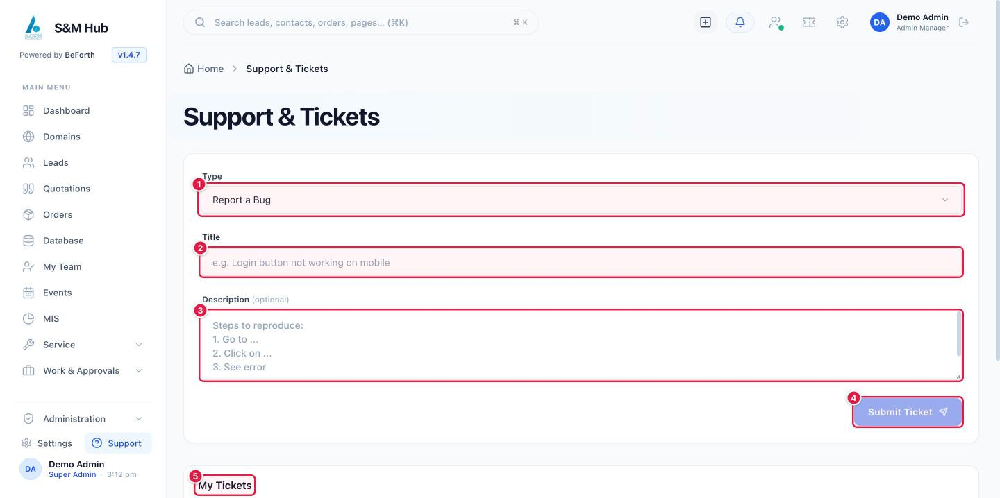
- Type. For example Report a Bug.
- Title.
- Description. Steps to reproduce help.
- Submit Ticket.
- My Tickets. Your earlier tickets.
12Quick Answers
For who can see which records and why, read Rules & How It Works.
| Problem | What to check |
|---|
| I can’t find a lead | Turn on Won & Lost, clear Only mine and the date range, and check the search box. If a colleague at your level created it, you will not see it. |
| A button is missing | That is a permission. Ask your admin to check your HRMS role. |
| My sidebar is shorter than a colleague’s | Your role has fewer permissions. This is normal. |
| Past-quarter numbers are blank on Domains | An admin controls this in Settings → Visibility. |
| A new permission does not work yet | Permissions are remembered for a short time. Wait a moment, then reload. |
| A quotation shows “Media Missing” | The record exists but the file cannot be found. Use the upload icon to add the file again. |
Not covered in this guideThe login page, the Schema developer page, and the Financials and Inventory pages (they show sample figures only).